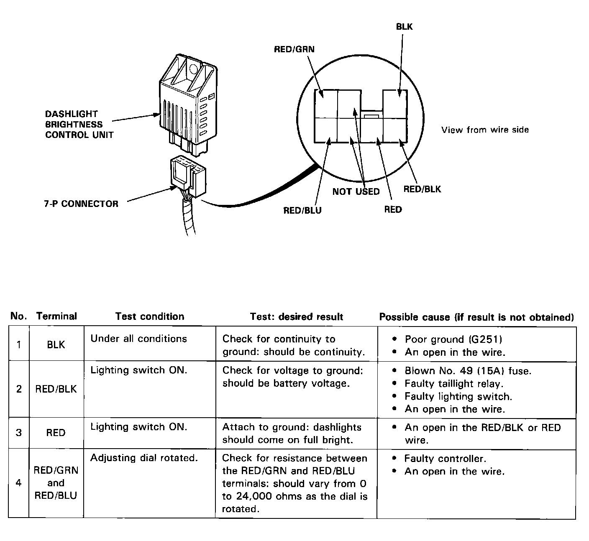
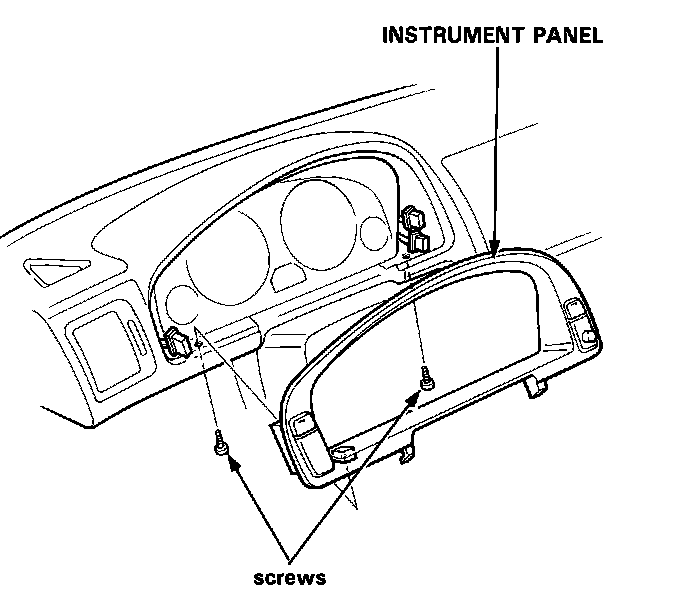
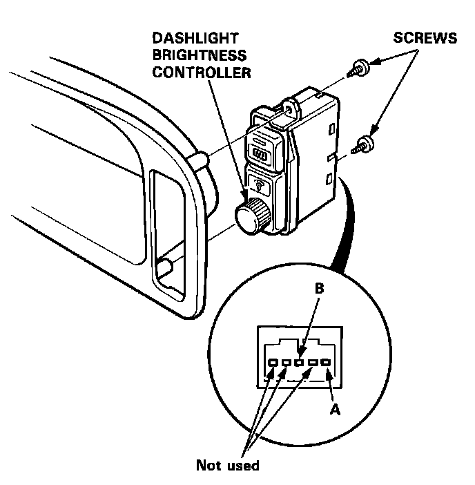
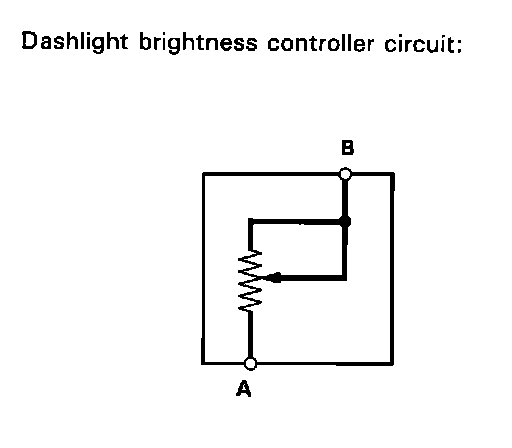

Panel Illumination Control Module: Testing and Inspection

Control Unit Input Test
Disconnect the 7-P connector from the control unit. Make the following input tests at the harness pins. If all tests prove OK, yet the dashlights still cannot be controlled, check the connector for a good connection. If OK, substitute a known-good control unit and recheck.
Controller Resistance Test

1. Remove the 2 screws, then disconnect each switch connector and remove the instrument panel.
2. Remove the dashlight brightness controller from the instrument panel.

3. Measure resistance between A and B terminals while rotating the adjusting dial.
Resistance should vary from 0 to 24,000 ohms as the dial is rotated.
NOTE: Resistance will vary slightly with temperature.

Dashlight Brightness Controller Circuit